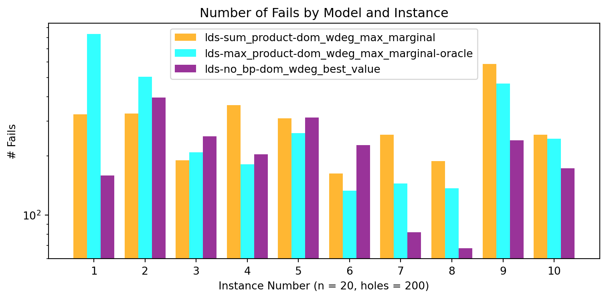
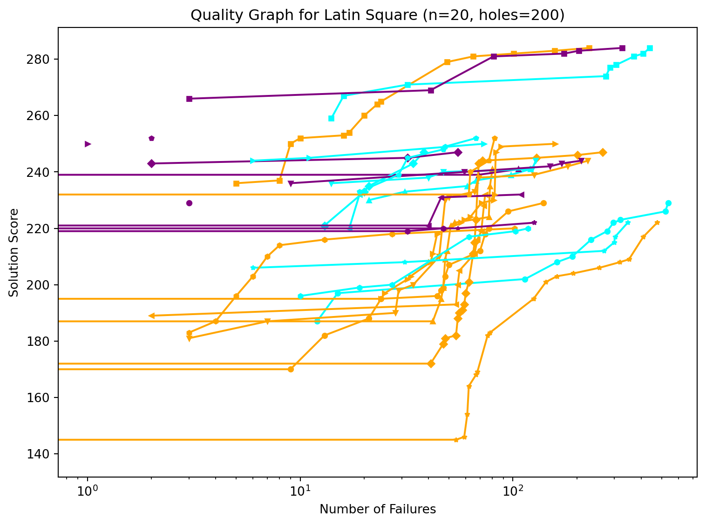
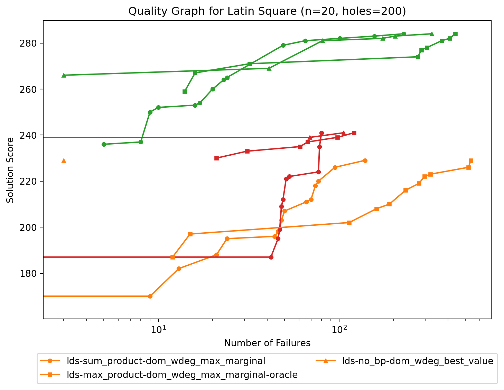
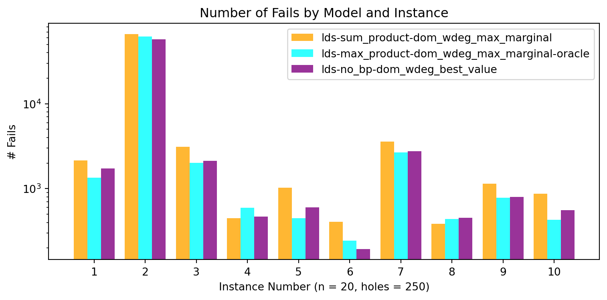
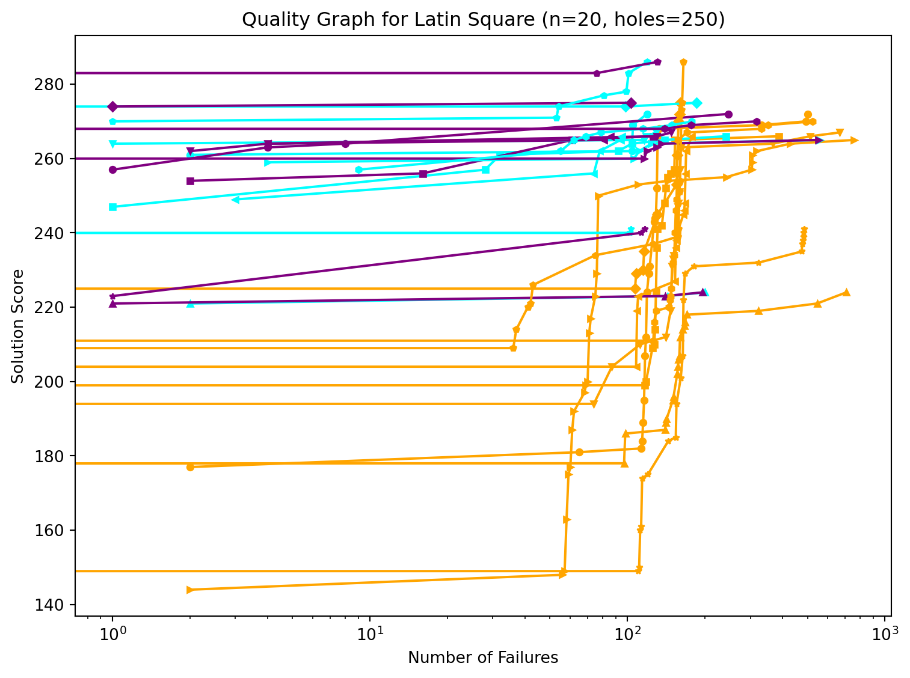
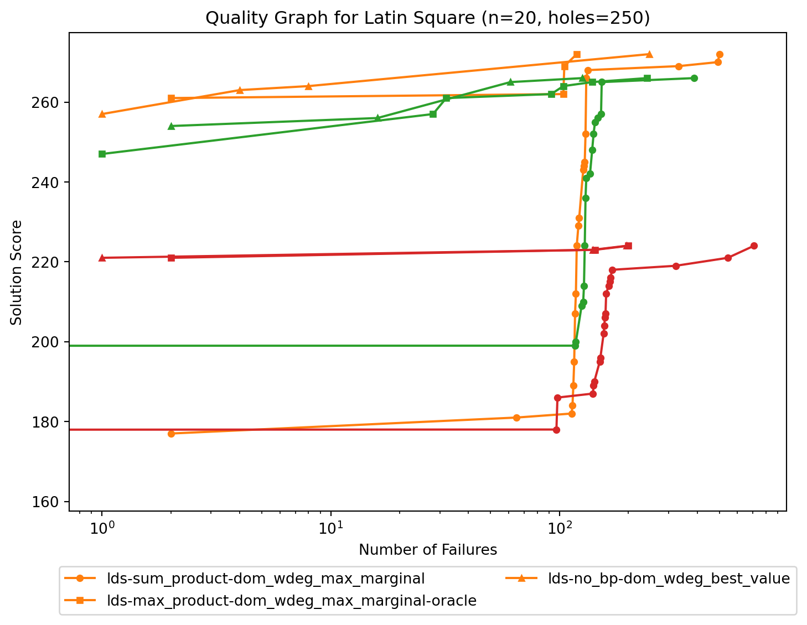
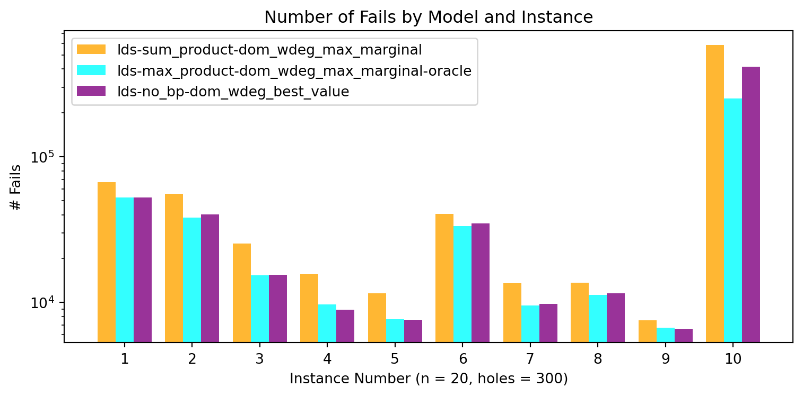
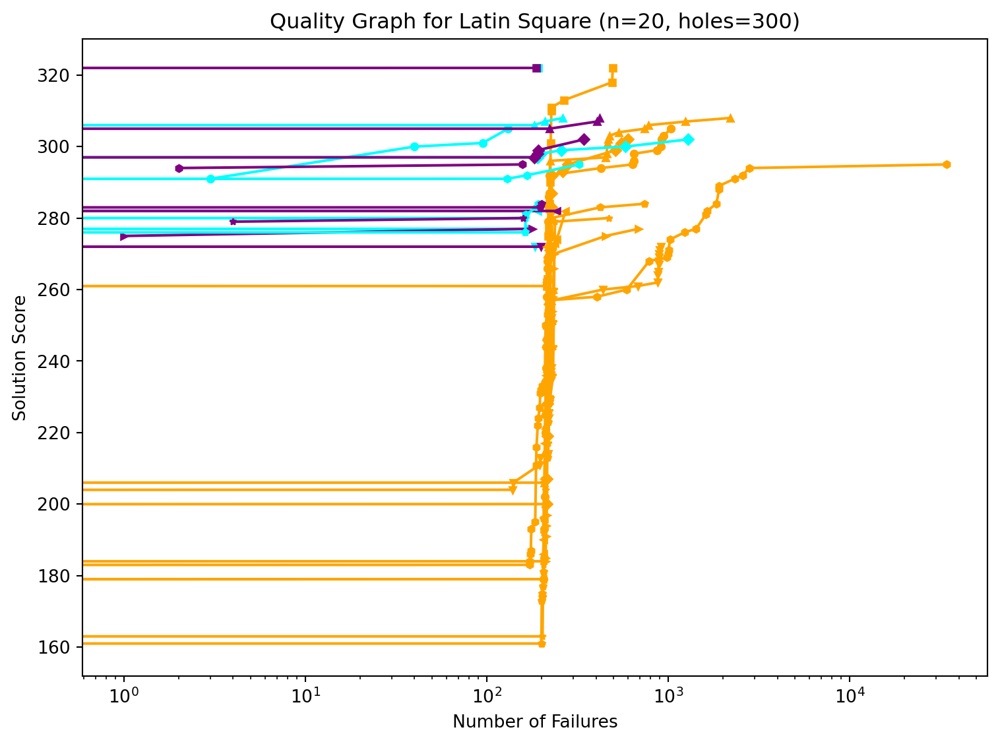
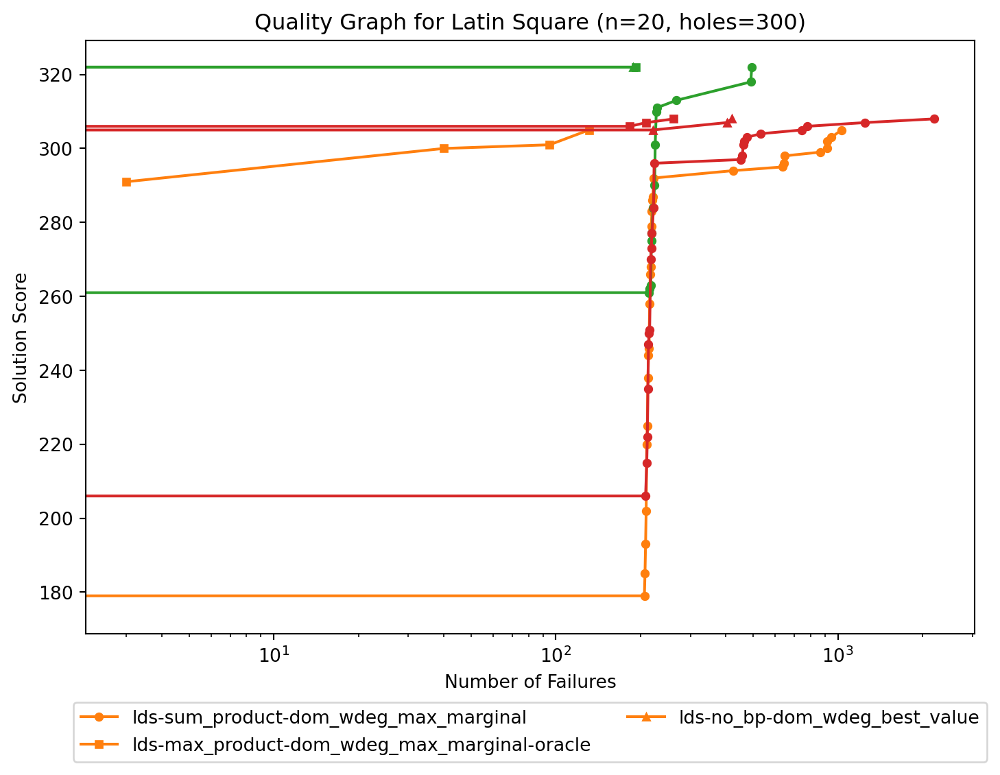

Code
import plot
all_instances = range(1, 11)
models1 = [
'lds-sum_product-dom_wdeg_max_marginal',
'lds-max_product-dom_wdeg_max_marginal-oracle',
'lds-no_bp-dom_wdeg_best_value',
# 'lds-no_bp-max_value',
]Very similar results for all sum-product, max-product and best-value approaches.
For instance that are harder to satisfy, sum-product will find a solution faster. Score for the first solution is highest with max-product and best-value.
Max-value is included for comparison and demonstrates the role of domwdeg, it generally performs worse: first solutoin take more time and have worse score on 200 holes. Optimality proof takes longer, especially for 250+ holes.
Sum-product finds a solution faster for 200 holes. For 250+ holes all approaches find a solution fast.
Fist solution score is significantly higher score max-product or best-value.
Solution are improved at comparable speed for 200 holes.
For 250+ holes a couple of instances take time for sum-product, but it is very similar.
sum-product does better for a few 200 holes instances.
max-product seems to do better than sum-product overall.
best-value is much better for a few 250+ holes instances.
Overall they take very similar number of fails to prove optimality.
import plot
all_instances = range(1, 11)
models1 = [
'lds-sum_product-dom_wdeg_max_marginal',
'lds-max_product-dom_wdeg_max_marginal-oracle',
'lds-no_bp-dom_wdeg_best_value',
# 'lds-no_bp-max_value',
] plot.hole_tables(n=20, holes=200, models=models1, instance_numbers=all_instances, objective="pseudodiagonal_20_5_5")
plot.fail_graph(n=20, holes=200, models=models1, instance_numbers=all_instances, objective="pseudodiagonal_20_5_5")
plot.quality_graph(n=20, holes=200, models=models1, instance_numbers=all_instances, objective="pseudodiagonal_20_5_5")
plot.quality_graph2(n=20, holes=200, models=models1, instance_numbers=all_instances[0:3], objective="pseudodiagonal_20_5_5")### Lds, Sum Product, Dom Wdeg Max Marginal
| i | fs Sc | fs #f | ls Sc | ls #f | #fail | #sols | comp. |
|----:|--------:|--------:|--------:|--------:|--------:|--------:|:--------|
| 1 | 166 | 0 | 229 | 139 | 325 | 16 | true |
| 2 | 236 | 5 | 284 | 228 | 328 | 14 | true |
| 3 | 184 | 0 | 241 | 80 | 190 | 11 | true |
| 4 | 164 | 0 | 247 | 264 | 362 | 19 | true |
| 5 | 181 | 3 | 244 | 225 | 310 | 13 | true |
| 6 | 189 | 2 | 232 | 74 | 163 | 9 | true |
| 7 | 194 | 0 | 250 | 158 | 257 | 17 | true |
| 8 | 228 | 0 | 252 | 82 | 188 | 5 | true |
| 9 | 139 | 0 | 222 | 476 | 588 | 18 | true |
| 10 | 183 | 3 | 220 | 102 | 257 | 9 | true |
### Lds, Max Product, Dom Wdeg Max Marginal, Oracle
| i | fs Sc | fs #f | ls Sc | ls #f | #fail | #sols | comp. |
|----:|--------:|--------:|--------:|--------:|--------:|--------:|:--------|
| 1 | 187 | 12 | 229 | 536 | 833 | 11 | true |
| 2 | 259 | 14 | 284 | 440 | 505 | 9 | true |
| 3 | 230 | 21 | 241 | 121 | 209 | 6 | true |
| 4 | 221 | 13 | 247 | 38 | 181 | 5 | true |
| 5 | 236 | 14 | 244 | 128 | 261 | 5 | true |
| 6 | 220 | 17 | 232 | 19 | 133 | 2 | true |
| 7 | 244 | 6 | 250 | 73 | 145 | 3 | true |
| 8 | 233 | 19 | 252 | 67 | 137 | 6 | true |
| 9 | 206 | 6 | 222 | 346 | 466 | 6 | true |
| 10 | 196 | 10 | 220 | 118 | 245 | 6 | true |
### Lds, No Bp, Dom Wdeg Best Value
| i | fs Sc | fs #f | ls Sc | ls #f | #fail | #sols | comp. |
|----:|--------:|--------:|--------:|--------:|--------:|--------:|:--------|
| 1 | 229 | 3 | 229 | 3 | 159 | 1 | true |
| 2 | 266 | 3 | 284 | 326 | 397 | 6 | true |
| 3 | 237 | 0 | 241 | 106 | 252 | 3 | true |
| 4 | 243 | 2 | 247 | 55 | 204 | 3 | true |
| 5 | 236 | 9 | 244 | 209 | 313 | 5 | true |
| 6 | 220 | 0 | 232 | 109 | 227 | 4 | true |
| 7 | 250 | 1 | 250 | 1 | 82 | 1 | true |
| 8 | 252 | 2 | 252 | 2 | 68 | 1 | true |
| 9 | 211 | 0 | 222 | 126 | 240 | 3 | true |
| 10 | 214 | 0 | 220 | 47 | 173 | 3 | true |



plot.hole_tables(n=20, holes=250, models=models1, instance_numbers=all_instances, objective="pseudodiagonal_20_5_5")
plot.fail_graph(n=20, holes=250, models=models1, instance_numbers=all_instances, objective="pseudodiagonal_20_5_5")
plot.quality_graph(n=20, holes=250, models=models1, instance_numbers=all_instances, objective="pseudodiagonal_20_5_5")
plot.quality_graph2(n=20, holes=250, models=models1, instance_numbers=all_instances[0:3], objective="pseudodiagonal_20_5_5")### Lds, Sum Product, Dom Wdeg Max Marginal
| i | fs Sc | fs #f | ls Sc | ls #f | #fail | #sols | comp. |
|----:|--------:|--------:|--------:|--------:|--------:|--------:|:--------|
| 1 | 177 | 2 | 272 | 501 | 2142 | 20 | true |
| 2 | 189 | 0 | 266 | 388 | 65996 | 17 | true |
| 3 | 163 | 0 | 224 | 708 | 3105 | 20 | true |
| 4 | 224 | 0 | 275 | 160 | 449 | 11 | true |
| 5 | 193 | 0 | 267 | 665 | 1030 | 18 | true |
| 6 | 200 | 0 | 266 | 178 | 409 | 14 | true |
| 7 | 144 | 2 | 265 | 760 | 3603 | 25 | true |
| 8 | 206 | 0 | 286 | 165 | 384 | 16 | true |
| 9 | 144 | 0 | 241 | 485 | 1149 | 22 | true |
| 10 | 206 | 0 | 270 | 524 | 871 | 19 | true |
### Lds, Max Product, Dom Wdeg Max Marginal, Oracle
| i | fs Sc | fs #f | ls Sc | ls #f | #fail | #sols | comp. |
|----:|--------:|--------:|--------:|--------:|--------:|--------:|:--------|
| 1 | 261 | 2 | 272 | 119 | 1341 | 4 | true |
| 2 | 247 | 1 | 266 | 241 | 62211 | 7 | true |
| 3 | 221 | 2 | 224 | 200 | 2018 | 3 | true |
| 4 | 269 | 0 | 275 | 185 | 597 | 3 | true |
| 5 | 264 | 1 | 267 | 129 | 451 | 4 | true |
| 6 | 249 | 3 | 266 | 95 | 244 | 5 | true |
| 7 | 259 | 4 | 265 | 559 | 2684 | 5 | true |
| 8 | 270 | 1 | 286 | 119 | 437 | 7 | true |
| 9 | 233 | 0 | 241 | 103 | 785 | 3 | true |
| 10 | 257 | 9 | 270 | 178 | 429 | 8 | true |
### Lds, No Bp, Dom Wdeg Best Value
| i | fs Sc | fs #f | ls Sc | ls #f | #fail | #sols | comp. |
|----:|--------:|--------:|--------:|--------:|--------:|--------:|:--------|
| 1 | 257 | 1 | 272 | 247 | 1725 | 4 | true |
| 2 | 254 | 2 | 266 | 126 | 57666 | 4 | true |
| 3 | 221 | 1 | 224 | 196 | 2130 | 3 | true |
| 4 | 274 | 1 | 275 | 103 | 471 | 2 | true |
| 5 | 262 | 2 | 267 | 148 | 601 | 4 | true |
| 6 | 264 | 4 | 266 | 86 | 195 | 3 | true |
| 7 | 259 | 0 | 265 | 551 | 2751 | 6 | true |
| 8 | 280 | 0 | 286 | 131 | 452 | 3 | true |
| 9 | 223 | 1 | 241 | 117 | 800 | 3 | true |
| 10 | 267 | 0 | 270 | 318 | 557 | 4 | true |



plot.hole_tables(n=20, holes=300, models=models1, instance_numbers=all_instances, objective="pseudodiagonal_20_5_5")
plot.fail_graph(n=20, holes=300, models=models1, instance_numbers=all_instances, objective="pseudodiagonal_20_5_5")
plot.quality_graph(n=20, holes=300, models=models1, instance_numbers=all_instances, objective="pseudodiagonal_20_5_5")
plot.quality_graph2(n=20, holes=300, models=models1, instance_numbers=all_instances[0:3], objective="pseudodiagonal_20_5_5")### Lds, Sum Product, Dom Wdeg Max Marginal
| i | fs Sc | fs #f | ls Sc | ls #f | #fail | #sols | comp. |
|----:|--------:|--------:|--------:|--------:|--------:|--------:|:--------|
| 1 | 176 | 0 | 305 | 1031 | 67123 | 27 | true |
| 2 | 254 | 0 | 322 | 495 | 55759 | 14 | true |
| 3 | 205 | 0 | 308 | 2195 | 25419 | 23 | true |
| 4 | 193 | 0 | 302 | 599 | 15644 | 21 | true |
| 5 | 198 | 0 | 272 | 913 | 11574 | 26 | true |
| 6 | 171 | 0 | 282 | 272 | 40571 | 16 | true |
| 7 | 180 | 0 | 277 | 686 | 13511 | 18 | true |
| 8 | 160 | 0 | 284 | 737 | 13704 | 21 | true |
| 9 | 162 | 0 | 280 | 469 | 7537 | 19 | true |
| 10 | 177 | 0 | 295 | 34109 | 583349 | 39 | true |
### Lds, Max Product, Dom Wdeg Max Marginal, Oracle
| i | fs Sc | fs #f | ls Sc | ls #f | #fail | #sols | comp. |
|----:|--------:|--------:|--------:|--------:|--------:|--------:|:--------|
| 1 | 291 | 3 | 305 | 131 | 52495 | 4 | true |
| 2 | 321 | 0 | 322 | 192 | 38216 | 2 | true |
| 3 | 303 | 0 | 308 | 262 | 15377 | 4 | true |
| 4 | 293 | 0 | 302 | 1283 | 9687 | 6 | true |
| 5 | 270 | 0 | 272 | 185 | 7694 | 2 | true |
| 6 | 281 | 0 | 282 | 190 | 33323 | 2 | true |
| 7 | 275 | 0 | 277 | 173 | 9531 | 2 | true |
| 8 | 274 | 0 | 284 | 192 | 11309 | 5 | true |
| 9 | 279 | 0 | 280 | 164 | 6700 | 2 | true |
| 10 | 286 | 0 | 295 | 323 | 250813 | 4 | false |
### Lds, No Bp, Dom Wdeg Best Value
| i | fs Sc | fs #f | ls Sc | ls #f | #fail | #sols | comp. |
|----:|--------:|--------:|--------:|--------:|--------:|--------:|:--------|
| 1 | 305 | 0 | 305 | 0 | 52529 | 1 | true |
| 2 | 321 | 0 | 322 | 188 | 40199 | 2 | true |
| 3 | 303 | 0 | 308 | 420 | 15540 | 4 | true |
| 4 | 293 | 0 | 302 | 343 | 8939 | 5 | true |
| 5 | 270 | 0 | 272 | 198 | 7615 | 2 | true |
| 6 | 281 | 0 | 282 | 243 | 34990 | 2 | true |
| 7 | 275 | 1 | 277 | 179 | 9807 | 2 | true |
| 8 | 281 | 0 | 284 | 200 | 11533 | 3 | true |
| 9 | 279 | 4 | 280 | 159 | 6618 | 2 | true |
| 10 | 294 | 2 | 295 | 157 | 414758 | 2 | true |


